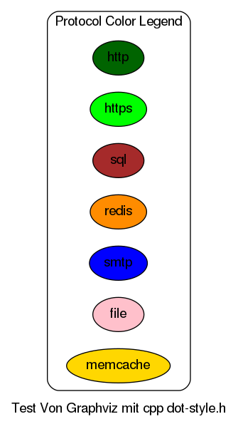
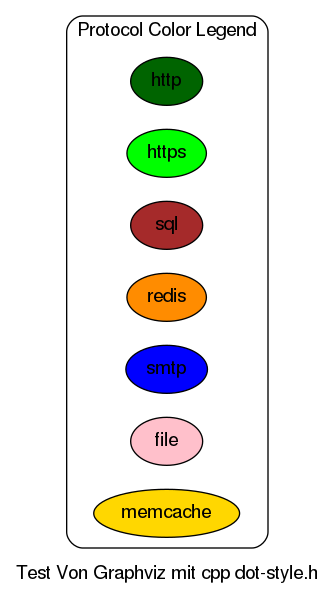
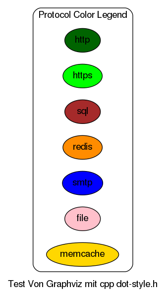
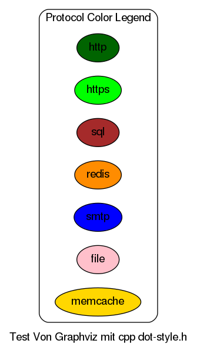
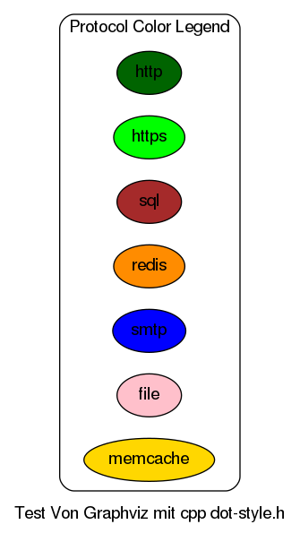

Appliance architecture
¶

Previous topic
Ecs Administration Handbook
Next topic
describe installation & configuration
Quick search
←
Ecs Administration Handbook
describe installation & configuration
→
ecs-admin-manual 0 TODO:use git id documentation
![#### perform execution via cpp | dot
#include "dot-style.h"
#define to ->
PROCESSFLOW("ECS - Appliance Architecture")
edge [style=dashed]
cluster(user,"User")
prod(webclient,"Webbrowser")
prod(emailclient,"Emailclient")
endcluster
prod(nginx,"Nginx\nWebserver")
prod(stunnel,"Stunnel\nIncoming Mail Proxy")
prod(smartmx,"Postfix\nOutgoing Mailserver")
prod(ecs,"ECS-Container\nWebserver\nQueue-Worker\nQueue-Beat\nMailserver")
prod(mocca,"Tomcat-Container\nMocca - Citizen Card System")
prod(pdfas,"Tomcat-Container\nPdfas - PDF Creation")
prod(redis,"Redis-Container\nQueuing-Server")
prod(memcache, "Memcache-Container\nMemory-Cache")
prod(postgresql,"PostgreSQL\nDatabase Server")
prod(storagevault,"shared filesystem\nStorage Vault")
webclient to nginx bidir(https)
emailclient to stunnel unidir(smtp)
smartmx to emailclient unidir(smtp)
nginx to ecs bidir(http)
nginx to pdfas bidir(http)
nginx to mocca bidir(http)
ecs to postgresql bidir(sql)
ecs to redis bidir(redis)
ecs to memcache bidir(memcache)
ecs to smartmx unidir(smtp)
ecs to storagevault bidir(file)
stunnel to ecs unidir(smtp)
END](_images/graphviz-df40701b01c85ccf7f7096e1975c4428a49fc418.png) 


